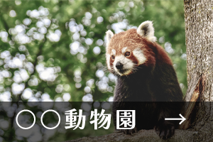
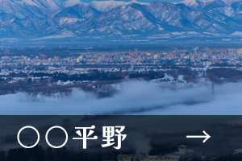

北海道の魅力
日本の夏は蒸し暑いイメージだが
北海道の夏は湿気が少なくかっらとした
爽やかな気候は夏の旅行にピッタリ！
そのうえ北海道には観光名所がたくさん。
北海道でしか味わえない"食"や
アクティビティも楽しめます！
おすすめの
楽しみ方
おすすめスポット

4つのエリア紹介
道北エリア
上川地方・留萌地方・宗谷地方
冬は日本で一番寒いといわれている道北エリア
自然がとても多く豊かな自然を体感できます。動物園でも楽しむことができます。
道北エリア内の観光名所

道東エリア
オホーツク地方・十勝地方・釧路地方・根室地方
世界的に希少な動植物やダイナミックで神秘的な湖
大自然に囲まれている道東エリア
道東エリア内の観光名所

道央エリア
空知地方・石狩地方・後志地方・胆振地方・日高地方
北海道の都市機能が集積した道東エリア
札幌や小樽のほかにも、洞爺湖などのリゾート地もあります。
道央エリア内の観光名所
道南エリア
渡島地方・檜山地方
自然や歴史文化をバラエティ豊かに楽しめる道南エリア
観光地で人気な函館があります。夜景がとてもきれいで人気です。
道南エリア内の観光名所
交通アクセス
主な3つのアクセス方法を紹介
飛行機
新幹線
船